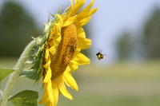

Next Photo
-
Vote
Growing Up
A child peers into the flame from a birthday candle, seeming to ponder the meaning of his age. Remnants of his birthday cake still sit in front of him, seeming to remind him that his day has past, and he is another year older. It strikes me odd that a child could have this expression on his face at his birthday. One assumes all children to be bursting with joy on their special day. That fact is what makes this photo interesting to me.
The atmosphere is great, the single light of the candle illuminates his face in a very sublime and thoughtful way. It brings out the skin tones and sets the mood for the entire picture.
More...
Title: Growing Up
Description: A child peers into the flame from a birthday candle, seeming to ponder the meaning of his age. Remnants of his birthday cake still sit in front of him, seeming to remind him that his day has past, and he is another year older. It strikes me odd that a child could have this expression on his face at his birthday. One assumes all children to be bursting with joy on their special day. That fact is what makes this photo interesting to me.
The atmosphere is great, the single light of the candle illuminates his face in a very sublime and thoughtful way. It brings out the skin tones and sets the mood for the entire picture.
Keywords: family pondering growing older birthday cake candle
Hidden: n
Date added: Wed Oct 24 21:23:10 CDT 2007
Date taken: Sun Aug 12 08:40:26 CDT 2007
Camera: Canon EOS DIGITAL REBEL XT.
Resolution: 3456x2304
Mode: 0
Shutter speed: 242512/65536
Flash: 16
Exposure time: 1/13
Iso: 400
Metering: 5
Aperture: 111149/65536
Focal length: 85/1
Artist: NathanielGuy Mahieu
Copyright: 2007 NathanielGuy Mahieu
Views: 383
